대기환경기사 (2010-05-09 기출문제)
1과목: 대기오염 개론
1. 바람을 일으키는 힘 중 전향력에 관한 설명으로 가장 거리가 먼 것은?
- 북반구에서는 항상 움직이는 물체의 운동방향의 왼쪽 90℃방향으로 작용한다.
- 전향력은 극지방에서 최대가 되고 적도 지방에서 최소가 된다.
- 지구의 자전에 의해 생기는 힘은 전향력이라 한다.
- 전향력의 크기는 위도, 지구자전 각속도, 풍속의 함수로 나타낸다.
(정답률: 70%)

2. 대기오염물질의 인체에 대한 영향으로 가장 거리가 먼 것은?
- 가용성 니켈 화합물에 폭로된 후 흔한 증상으로는 치부 증상이며, 니켈은 위장관으로는 거의 흡수되지 않는다.
- 베릴륨 화합물은 흡입, 섭취 혹은 피부접촉으로는 거의 흡수되지 않으며 폐에 잔존할 수 있고, 뼈, 간, 비장에 침착될 수 있다.
- 바나듐에 폭로된 사람들에게는 혈장 콜레스테롤치가 저하되며, 만성폭로 시 설태가 끼일 수 있다.
- 탈리움의 수용성 염은 위장관, 피부, 호흡기를 통해 거의 흡수되지 않으나, 배설은 장관과 신장을 통해 비교적 빨리 일어난다.
(정답률: 58%)
3. 고도에 따른 온도분포가 fumigation형에 대한 조건과 반대로서 역전층은 굴뚝높이보다 아래에 존재하고 불안정층은 상공에 존재하는 연기형태는?
- looping
- fanning
- lofting
- coning
(정답률: 64%)
4. 다음 중 PBzN(Peroxybenzoyl nitrate)의 구조식을 옳게 나타낸 것은?
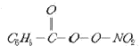
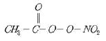
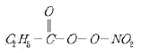
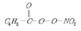
(정답률: 53%)
5. 바람에 대한 설명 중 옳지 않은 것은?
- 마찰층 내의 바람은 높이에 따라 시계방향으로 각 천이가 생겨나며 위로 올라갈수록 변하는 양이 감소한다.
- 지균풍은 마찰력이 무시될 수 있는 고도에서 등압선이 직선 일 때 기압경도력과 전향력이 평형을 이루어 등압선에 평행으로 부는 바람이다.
- 해륙풍 중 육풍은 낮동안 햇빛에 더워지기 쉬운 육지쪽이 저기압으로 되어 바다로부터 육지쪽으로 10~15km까지 분다.
- 경도풍은 기압경도력과 전향력, 원심력이 평형을 이루어 부는 바람이다.
(정답률: 63%)
6. 대기오염물질 배출업소의 사업장 분류기준은?
- 대기오염물질의 최고 농도
- 대기오염물질의 연간 총 발생량
- 대기오염물질의 일 최대 배출량
- 대기오염물질의 배출시설의 굴뚝 규모
(정답률: 82%)
7. 다음 특정 물질 중 오존 파괴지수가 가장 큰 것은?
- CF2BrCl
- CHFClCF3
- C3HF6Cl
- C3H3F3Cl2
(정답률: 66%)
8. 다음 중 안개(fog)에 관한 설명으로 가장 거리가 먼 것은?
- 분산질이 기체이고, 직경이 1㎛ 이상인 입자를 말하며, 브라운 운동에 의해 이동한다.
- 시정 수평거리가 보통 1km 미만이다.
- 습도는 100% 또는 여기에 가까운 경우로 눈에 보이는 입자상물질이다.
- 대기오염물질과 수분이 반응하여 산성을 띤 산성안개도 있다.
(정답률: 75%)
9. 냄새물질에 대한 다음 설명 중 옳지 않은 것은?
- 분자 내 수산기의 수는 1개 일 때 가장 강하고 수가 증가하면 약해져서 무취에 이른다.
- 골격이 되는 탄소(C) 수는 고분자일수록 관능기 특유의 냄새가 강하고 25~30 에서 향기가 강하다.
- 에스테르화합물은 구성하는 산이나 알코올류보다 방향이 우세하다.
- 분자 내에 황 및 질소가 있으면 냄새가 강하다
(정답률: 71%)
10. 상자모델을 전개하기 위하여 설정된 가정으로 가장 거리가 먼 것은?
- 오염물은 지면의 한 지점에서 일정하게 배출된다.
- 고려된 공간에서 오염물의 농도는 균일하다.
- 고려되는 공간의 수직단면에 직각방향으로 부는 바람의 속도가 일정하여 환기량이 일정하다.
- 오염물의 분해는 일차반응에 의한다.
(정답률: 69%)
11. Fick의 확산방정식(
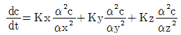
)을 실제 대기에 적용하기 위하여 일반적으로 추가하는 가정으로 가장 거리가 먼 것은?- 확산에 의한 오염물의 주이동방향을 X축이다.
- 과정은 안정상태(
 )이다.
)이다. - 오염물은 점오염원으로부터 계속적으로 방출된다.
- 풍속은 x,y,z 좌표시스템내의 어느 점에서든 일정하다.
(정답률: 37%)
12. Sutton의 지표상의 최대착지농도를 나타내는 확산관계식에서 최대 착지농도에 대한 설명으로 옳지 않은 것은?
- 오염물질 배출율(량)에 비례한다.
- 유효굴뚝 높이의 제곱에 반비례한다
- 평균풍속에 비례한다.
- 수평 및 수직방향 확산계수와 관계가 있다.
(정답률: 59%)
13. 대기압력이 945mb 인 높이에서의 온도가 18.5℃이었다. 온위는? (단,
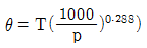
)- 288.6K
- 296.3K
- 303.6K
- 312.4K
(정답률: 70%)
14. 광화학반응으로 생성된 광화학 산화제(photochemical oxidants)에 해당하지 않는 것은?
- Ozone
- PAN(Peroxyacetyle nitrate)
- Hydrogen peroxide
- Hydrogen chloride
(정답률: 64%)
15. 지상 10m에서의 풍속은 3.0m/sec이다. 지상고도 100m에서 기상상태가 매우 불안정할 때와 안정할 때의 풍속 비율은? (단, Deacon의 power law를 적용하고, 대기안정도에 따른 풍속지수값은 매우 불안정할 때는 0.15, 안정할 때는 0.60을 적용한다.)
- 약 0.25
- 약 0.35
- 약 0.45
- 약 0.55
(정답률: 63%)
16. 다음 중 수용모델의 특성에 해당하는 것은?
- 지형 및 오염원의 조업조건에 영향을 받는다.
- 단기간 분석 시 문제가 된다.
- 현재나 과거에 일어났던 일을 추정, 미래를 위한 전략은 세울 수 있으나 미래예측은 어렵다.
- 점, 선, 면 오염원의 영향을 평가할 수 있다.
(정답률: 76%)
17. 다음 중 CFC-11의 올바른 식은?
- CHFCl2
- CF3Br
- CF3Cl
- CFCl3
(정답률: 63%)
18. 일산화탄소에 대한 설명으로 옳지 않은 것은?
- . 자연적 발생원에는 화산폭발, 테르펜류의 산화, 클로로필의 분해, 산불 및 해수 중 미생물의 작용 등이 있다.
- 지구위도별 분포로 보면 적도부근에서 최대치를 보이고, 북위 30도 부근에서 최소치를 나타낸다.
- 물에 난용성이므로 수용성 가스와는 달리 비에 의한 여향을 거의 받지 않는다.
- 다른 물질에 흡착현상도 거의 나타내지 않는다.
(정답률: 69%)
19. 다음 중 아황산가스에 대한 식물저항력이 가장 큰 것은?
- 옥수수
- 호박
- 담배
- 보리
(정답률: 67%)
20. 온실효과에 관한 설명 중 가장 적합한 것은?
- 일산화탄소의 기여도가 가장 큰 것으로 알려져 있다.
- 실제 온실에서의 보온작용과 같은 원리이다.
- 가스차단기, 소화기 등에 주로 사용되는 NO2는 온실효과에 대한 기여도가 CH4 다음으로 크다.
- 온실효과 가스가 증가하면 대류권에서 적외선 흡수량이 많아져서 온실효과가 증대된다.
(정답률: 60%)
2과목: 연소공학
21. 3915kg의 석탄이 완전연소 하는데 이론적으로 소요되는 공기량은?(단, 석탄은 모두 탄소로 구성되어 있다고 가정한다.)
- . 25000 kg
- 35000 kg
- 45000 kg
- 65000 kg
(정답률: 57%)
22. 분자식 CmHn인 탄화수소 1Sm3를 완전연소 시 이론 공기량이 19Sm3 인 것은?
- C2H4
- C2H2
- C3H8
- C3H4
(정답률: 69%)
23. 착화온도에 대한 설명으로 옳지 않은 것은?
- 공기의 산소농도 및 압력이 높을수록 착화온도는 낮아진다.
- 석탄의 탄화도가 작을수록 착화온도는 낮아진다.
- 화학결합의 활성도가 클수록 착화온도는 낮아진다.
- 대체로 탄화수소의 착화온도는 분자량이 작을수록 낮아진다.
(정답률: 40%)
24. 액체연료가 미립화되는데 영향을 미치는 요인으로 가장 거리가 먼 것은?
- 분사압력
- 분사속도
- 연료의 점도
- 연료의 발열량
(정답률: 63%)
25. 창고에 화재가 발생하여 적재된 A화합물이 5분동안 1/2 소실되었다. 이 A화합물의 90%가 소실되는데 걸리는 시간은?(단, 연소반응은 2차반응으로 진행된다.)
- 25분
- 35분
- 45분
- 75분
(정답률: 57%)
26. 연료의 저위발열량 20000kcal/Sm3, 이론연소가스량 23Sm3/Sm3, 외기온도(공기)20℃일 때 이론연소온도는? (단, 연료 연소가스의 평균정압비열 0.31kcal/Sm3ㆍ℃, 지금 공기는 예열되지 않으며, 연소가스는 해리되지 않음)
- 약 2480℃
- 약 2550℃
- 약 2690℃
- 약 2825℃
(정답률: 55%)
27. 기체연료에 관한 설명으로 가장 적합한 것은?
- 점화 전 연료수분을 제거하기 위한 장치가 필요하다.
- 연소율의 가연범위(turn-down ratio)가 넓다.
- 저장 및 수송이 용이하다.
- 회분 및 유해물질의 배출양이 많다.
(정답률: 68%)
28. 기체연료 혼합물의 조성이 ethylene 20%, ethane 40%, propane 40% 이다. 이 기체연료 3kmol의 질량(kg)은?
- 17.6 kg
- 35.2 kg
- 52.8 kg
- 1⑤.6 kg
(정답률: 44%)
29. 용적비로 Propane : Butane = 3 : 1로 혼합된 가스 1Sm3를 이론적으로 완전연소할 경우 발생되는 CO2량(Sm3)은?
- 2.75
- 3.25
- 3.50
- 3.75
(정답률: 49%)
30. 연소방식 및 연소장치에 관한 설명으로 옳지 않은 것은?
- 기화 연소방식과 분무화 연소방식은 액체연료의 연소방식에 해당한다.
- 충돌 분무회식에서 분무화 입경은 연료의 점도와 표면장력이 클수록 커진다.
- 회전식버너는 유압식버너에 비해 연료유의 분무화 입경이 적으며, 내부혼합식의 경우 연료분사범위는 3000~10000L/h 정도이다.
- 고압기류 분무식버너는 2~8kg/cm2의 고압공기를 사용하여 연료유를 분무화시키는 방식으로 분무각도는 30° 정도이다.
(정답률: 49%)
31. 미분탄 연소에 관한 설명으로 가장 거리가 먼 것은?
- 반응속도에 영향을 주는 요인들이 많으나, 연소에 요하는 시간은 대략 입자지름의 제곱에 반비례한다.
- 같은 양의 석탄에서는 표면적이 대단히 커지고, 공기와의 접촉 및 열전달도 좋아지므로 작은 공기비로 완전연소가 된다.
- 재비산이 많고 집진장치가 필요하다.
- 점화 및 소화 시 열손실은 적고, 부하의 변동에 쉽게 적용할 수 있다.
(정답률: 47%)
32. 다음 중 저온부식의 원인과 대책에 관한 설명으로 가장 거리가 먼 것은?
- 연소가스 온도를 산노점 온도보다 높게 유지해야 한다.
- 예열공기를 사용하거나 보온시공을 한다.
- 저온부식이 일어날 수 있는 금속표면은 피복을 한다.
- 250℃ 이상의 전열면에 응축하는 황산, 질산 등에 의하여 발생된다.
(정답률: 54%)
33. 고체연료의 연소방법 중 유동측 연소법에 관한 설명으로 가장 거리가 먼 것은?
- 연소온도가 미분탄연소로에 비해 높아 NOx 생성억제에 불리하다.
- 조대 고형물의 경우 투입을 위하 파쇄가 필요하다.
- 로내에서 산성가스의 제거가 가능하다.
- 재나 미연탄소의 배출이 많다.
(정답률: 63%)
34. 다음 중 옥탄가에 대한 설명으로 가장 거리가 먼 것은?
- N-paraffine에서는 탄소수가 증가할수록 옥탄가가 저하하여 C7에서 옥탄가는 0 이다.
- Iso-paraffine에서는 methyle 측쇄가 적을수록, 특히 중앙집중보다는 분산될수록 옥탄가가 증가한다.
- Naphthene계는 방향족 탄화수소보다는 옥탄가가 작지만 N-paraffine계보다는 큰 옥탄가를 가진다.
- 방향족 탄화수소의 경우 벤젠고리의 측쇄가 C3까지는 옥탄가가 증가하지만 그 이상이면 감소한다.
(정답률: 65%)
35. 다음 중 기체연료의 연소방법으로서 역화 위험이 가장 큰 것은?
- 확산연소
- 부유연소
- 난류연소
- 예혼합연소
(정답률: 70%)
36. 연로 등의 연소 시에 과잉공기의 비율을 높임으로써 생기는 현상으로 가장 거리가 먼 것은?
- CH4, CO 및 C 등 연료중의 가연성 물질의 농도가 감소되는 경향을 보인다.
- 에너지손실이 커진다.
- 희석효과가 높아진다.
- 화염의 크기가 커지고 불완전 연소물질의 농도가 증가한다.
(정답률: 68%)
37. 다음 중 코우크스나 석탄, 목재 등을 적열상태로 가열하여 공기 혹은 산소를 보내어 불완전 연소시킨 기체연료는?
- 수성가스
- 오일가스
- 발생로가스
- 분해가스
(정답률: 58%)
38. 중유 중 황(S)함량 3%인 것을 6400kg/h 로 연소할 때 5분 동안 생성되는 화상화물의 양(Sm3)은?
- 5.6
- 11.2
- 22.4
- 134.4
(정답률: 46%)
39. Propane 2.5Sm3를 완전연소시킬 때 이론 건조연소가스량(Sm3)은?
- 32.8
- 54.5
- 65.4
- 73.1
(정답률: 48%)
40. 다음은 직접화염 재연소기에 관한 설명이다. ( ) 안에 알맞은 것은?
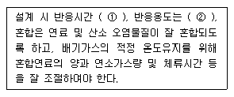
- ① 0.2~0.7초, ② 650~870℃
- ① 0.2~0.7초, ② 250~350℃
- ① 15~30초, ② 650~870℃
- ① 15~30초, ② 250~350℃
(정답률: 49%)
3과목: 대기오염 방지기술
41. 시멘트 공장에서 먼지를 제거하기 위하여 길이 4.2m, 높이 4.8m인 집진판을 평행하게 설치한 집진장치를 설치하였다. 판의 간격은 23cm 이며, 평형판 사이로 농도가 10.4g/m3인 배출가스 68m3/min를 처리한다면 집진효율(%)은?(단, 전기집진장치내 입자의 이동속도는 5.8cm/sec)
- 87.3
- 89.4
- 93.5
- 95.6
(정답률: 37%)
42. 여과집진장치에 관한 설명으로 옳지 않은 것은?
- 수분이나 여과속도에 대한 적응성이 높다.
- 세정집진장치보다 압력손실과 동력소모가 적은 편이다.
- 여과재의 교환으로 유지비가 고가이다.
- 다양한 여과재의 사용으로 인하여 설계시 융통성이 있다.
(정답률: 65%)
43. 흡착은 유체로부터 기체(또는 액체)성분을 어떤 고체상 물질에 의해 선택적으로 제거할 수 있는 분리공정이다. 다음 중 흡착법이 유용한 경우와 가장 거리가 먼 것은?
- 기체상 오염물질이 비연소성이거나 태우기 어려운 경우
- 오염물질의 회수가치가 충분한 경우
- 분자량이 큰 고분자 입자로서 용해도가 높은 경우
- 배기내의 오염물 농도가 대단히 낮은 경우
(정답률: 49%)
44. 다음 중 가스의 압력손실은 작은 방면, 상당한 동력이 요구되며, 장치의 압력 손실은 2~20mmH2O, 가스 겉보기 속도는 0.2~1m/s 정도인 세정집진장치에 해당하는 것은
- sieve plate tower
- orifice scrubber
- spray tower
- packed tower
(정답률: 71%)
45. 3개의 집진장치를 직렬로 조합하여 집진한 결과 총집진율이 99%이었다. 1차 및 2차 집진장치의 집진율이 각각 70%, 80%라 하면 3차 집진장치의 집진율은 약 얼마인가?
- 약 75.1%
- 약 83.4%
- 약 92.3%
- 약 95.6%
(정답률: 66%)
46. 10개의 bag을 사용한 여과 집진장치에서 입구 먼지농도가 25g/Sm3, 집진율이 98%였다. 가동 중 1개의 bag에 구멍이 열려 전체 처리가스량의 1/5 이대로 통과 하였다면 출구의 먼지농도는? (단, 나머지 bag의 집진율 변화는 없음)
- 3.24 g/Sm3
- 4.09 g/Sm3
- 4.82 g/Sm3
- 5.40 g/Sm3
(정답률: 41%)
47. 물리적 흡착공정에 대한 설명으로 옳지 않은 것은?
- Van der Waals 결합력으로 약하게 결합되어 있다.
- 가역성이 높다.
- 임계온도 이상에서 흡착성이 우수하다.
- 가스 중의 분자간 상호의 인력보다 고체표면과의 인력이 크게 되는 때에 일어난다.
(정답률: 44%)
48. 충전탑(packed tower)내 충전물에 요구되는 일반사항으로 가장 거리가 먼 것은?
- 단위체적당 넓은 표면적을 가질 것
- 압력 손실이 작을 것
- 충분한 화학적 저항성을 가질 것
- 충전밀도가 작을 것
(정답률: 64%)
49. 관성력집진장치의 집진율 향상조건으로 가장 거리가 먼 것은?
- 적당한 dust box의 형상과 크기가 필요하다.
- 기류의 방향전환 회수가 많을수록 압력손실은 커지지만 집진율은 높아진다.
- 보통 충돌직전의 처리가스 속도가 크고, 처리 후 출구 가스 속도가 작을수록 집진율의 높아진다.
- 함진가스의 충돌 또는 기류 방향 전환직전의 가스 속도가 작고, 방향 전환 시 곡률 반경이 클수록 미세입자 포집이 용이하다.
(정답률: 65%)
50. 습식배연탈황법 중 석회석-석고법은 흡수탑 및 탑 이후의 배관에서 스켈링을 일으킨다. 이 스켈링 방지방법으로 가장 거리가 먼 것은?
- 흡수탑 순환액에 산화탑에서 생성한 석고를 반송하고 흡수액 슬러리 중의 석고농도를 5% 이상으로 유지하여 석고의 결정화를 촉진한다.
- 흡수액량을 적게 하여 탑내에서의 결착을 촉진시킨다.
- 순환액 pH값 변동을 적게 한다.
- 탑내에 내장물을 가능한 한 설치하지 않는다.
(정답률: 52%)
51. 전기집진장치의 장애현상 중 역전리 현상(back corona)의 원인으로 가장 거리가 먼 것은?
- 먼지 비저항이 너무 클 때
- 미분탄 연소시
- 입구의 유속이 클 때
- 배출가스의 점성이 클 때
(정답률: 49%)
52. 흡수탑에 적용되는 흡수액 선정시 고려할 사항으로 거리가 먼 것은?
- 비표면적이 커야 한다.
- 용해도가 커야 한다.
- 비점은 높아야 한다.
- 점도는 낮아야 한다.
(정답률: 34%)
53. 집진장치의 압력손실 350mmH2O, 처리가스량 3500m3/min, 송풍기 효율 70%, 송풍기 축동력에 여유율 30%를 고려한다면 이 장치의 소요동력은?(오류 신고가 접수된 문제입니다. 반드시 정답과 해설을 확인하시기 바랍니다.)
- 200 kW
- 240kW
- 286kW
- 343kW
(정답률: 34%)
54. 그림과 같은 곡관에서 각 지점의 유속이 A:1550m/min, B:1350m/min 일 때 압력손실(mmH2O)은? (단, 21℃, 1atm이다.)
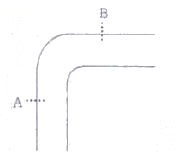
- 약 4.6
- 약 9.9
- 약 14.6
- 약 18.9
(정답률: 38%)
55. 3개의 집진실로 구성된 여과집진실의 총 여과시간이 70분이고, 단위 집진실의 탈진시간이 5분이라면, 단위집진실의 운전시간은?
- 15분
- 20분
- 30분
- 45분
(정답률: 34%)
56. cyclone으로 집진 시 집진효율이 50%인 입경을 의미하는 것은?
- Cut size diameter
- Critical diameter
- Stokes diameter
- Aerodynamic diameter
(정답률: 77%)
57. 45° 곡간의1반경비가 2.0일 때 압력손실계수는 0.27이다. 속도압이 15mmH2O일 때, 곡관 압력손실은?
- 1.5 mmH2O
- 2.0 mmH2O
- 3.5 mmH2O
- 4.0 mmH2O
(정답률: 36%)
58. 알루미나 담체에 탄산나크륨을 3.5~3.8% 정도 첨가하여 제조된 흡착제를 사용하여 황산화물과 질소산화물을 동시 제거하는 공정은?
- Bio scrubbing
- Bio filter 공정
- Dual Acid scrubbing
- NOXSO 공정
(정답률: 74%)
59. 튀김집 주방환기구에서 옥상까지 10m 길이로 양철직관 환기장치를 하려고 한다. 이 가로 300mm, 세로 450mm의 장방형관에 100m3/min 표준공기가 흐른다고 가정 할 때, 이 양철직관(10m)의 마찰압력손실은? (단, 마찰계수(f)는 0.03이고,
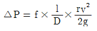
이용)- 8.4 mmH2O
- 20.4 mmH2O
- 31.8 mmH2O
- 37.6 mmH2O
(정답률: 21%)
60. 다음 송풍기 중 소음이 크나 구조가 간단하여 설치장소에 제약이 적고, 고온, 고압의 대용량에 적합하여, 압입통풍기로 주요 사용되는 것으로 효율이 좋은 것은?
- 터보형
- 평판형
- 다익형
- 프로펠러형
(정답률: 44%)
4과목: 대기오염 공정시험기준(방법)
61. 배출허용기준 중 표준산소농도를 적용받는 항목의 오염물질 농도 보정식으로 옳은 것은? (단, C : 오염물질 농도(mg/Sm3 또는 ppm), Ca: 실측오염물질 농도(mg/Sm3 또는 ppm), Oa: 실측산소(%), Os:표준산소농도(%))
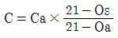
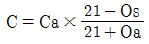
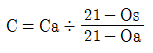
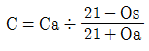
(정답률: 71%)
62. 다음은 외부로 비산 배출되는 먼지를 불투명 도법으로 측정하는 방법이다. ( )안에 알맞은 것은?
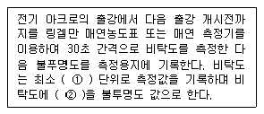
- ① 0.5도, ② 20%를 곱한 값
- ① 1도, ② 20%를 곱한 값
- ① 0.5도, ② 100%를 곱한 값
- ① 1도, ② 100%를 곱한 값
(정답률: 69%)
63. 굴뚝 배출가스 중 아황산가스의 자동 연속 측정방법에서 사용하는 용어의 의미로 가장 적합한 것은?
- 교정가스: 공인기관의 보정치가 제시되어 있는 표준가스로 연속자동측정기 최대 눈금치의 약 10%와 90%에 해당하는 농도를 갖는다.
- 제로가스: 공인기관에 의해 아황산가스 농도가 1pp,미만으로 보증된 표준가스를 말한다.
- 검출한계: 제로드리프트의 3배에 해당하는 지시치가 갖는 아황산가스의 농도를 말한다.
- 점(point) 측정시스템: 굴뚝 또는 덕트 단면 직겨의 50% 이하의 경로에서 오염물질 농도를 측정하는 배출가스 연속자동측정시스템이다.
(정답률: 27%)
64. 굴뚝배출가스 중 알데히드 및 케톤화합물(카르보닐화합물) 분석방법으로 옳지 않은 것은?
- 크로모트로핀산법은 배출가스를 크포트로핀산을 함유하는 흡수발색액에 포집하고 가온하여 얻은 자색발색액의 흡광도를 측정하여 농도를 구한다.
- 아세틸아세톤법은 배출가스를 아세틸아세톤을 함유하는 흡수발색액에 포집하고 가온하여 얻은 황색발색액의 흡광도를 측정하여 농도를 구한다.
- 흡수액 2,4-DNPH(Dinitrophenylhydrazine)과 반응하여 하이드라존 유도체를 생성하게 되고 이를 액체크로마토그래프로 분석한다.
- 수산화나트륨용액(0.4W/V%)에 흡수, 포집시켜 이용액을 산성으로 한 후 초산에틸로 용매를 추출해서 이온화검출기를 구비한 가스크로마토크래프로 분석한다.
(정답률: 44%)
65. 환경대기 중의 석면시험방법 중 계수대상물의 정의로 옳은 것은?
- 포집한 먼지 중 길이 1㎛이상이고, 길이와 폭의 비가 10:1 이상인 섬유를 석면섬유로서 계수한다.
- 포집한 먼지 중 길이 1㎛이상이고, 길이와 폭의 비가 2:1 이상인 섬유를 석면섬유로서 계수한다.
- 포집한 먼지 중 길이 5㎛이상이고, 길이와 폭의 비가 3:1 이상인 섬유를 석면섬유로서 계수한다.
- 포집한 먼지 중 길이 10㎛이상이고, 길이와 폭의 비가 10:1 이상인 섬유를 석면섬유로서 계수한다.
(정답률: 44%)
66. 굴뚝 배출가스 중 먼지를 보통형 흡인노즐을 이용할 때 등속흡인을 위한 흡인량(L/min)은?
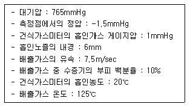
- 14.8
- 11.6
- 9.9
- 8.4
(정답률: 19%)
67. 다음은 환경대기 중 다환방향족탄화수소류(PAHs)-기체크로마토그래피/질량분석법에 사용되는 용어의 정의이다. ( )안에 알맞은 것은?
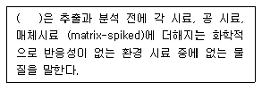
- 내부표준물질(IS, internal standard)
- 외부표준물질(ES, external standard)
- 대체표준물질(surrogate)
- 속실렛(Soxhlet) 추출물질
(정답률: 60%)
68. 다음은 흡광광도계에 사용되는 흡수셀의 세척방법이다. ( )안에 가장 알맞은 것은?
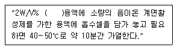
- Na2Cu3ON
- Kl
- Na2CO3
- NaOH
(정답률: 52%)
69. 굴뚝 배출가스 중 일산화탄소 분석방법으로 가장 거리가 먼 것은?
- 이온크로마토그래프법
- 가스크로마토그래프법
- 비분산적외선분석법
- 정전위전해법
(정답률: 49%)
70. 다음은 연료용 유류중의 황함유량을 연소관식 공기법으로 분석하는 방법이다. ( )안에 알맞은 것은?
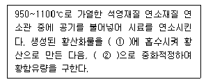
- ① 과산화수소(3%), ② 수산화칼륨표준액
- ① 과산화수소(3%), ② 수산화나트륨표준액
- ① 10% AgNO3, ② 수산화칼륨표준액
- ① 10% AgNO3, ② 수산화나트륨표준액
(정답률: 46%)
71. 원형굴뚝의 직경이 4.3m 이었다. 굴뚝 배출가스 중의 먼지 측정을 위한 측정점수는 몇 개로 하여야 하는가?
- 12
- 16
- 20
- 24
(정답률: 59%)
72. 굴뚝 배출가스 중 이황화탄소 분석방법에 대한 설명으로 틀린 것은?
- 흡광광도밥은 시료가스 채취량이 10L인 경우 배출가스 중의 이황화탄소 농도가 3~60 V/Vppm의 분석에 적합하다.
- 흡과광도법은 디에틸아민동용액에 시료가스를 흡수시켜 생성된 디에틸디키오카바민산동의 흡광도를 635nm의 파장에서 측정하여 이황화탄소를 정량한다.
- 가스크로마토그래프법은 이황화탄소농도 0.5V/Vppm이상의 분석에 적합하다.
- 디에틸디티오 카바민산나트륨 용액은 보통 제조후 1개월 이상 경과한 것은 사용해서는 안된다.
(정답률: 50%)
73. 이온크로마토그래프법에 관한 설명으로 옳지 않은 것은?
- 써프렛서는 관현과이온교환막형이 있으며, 관형은 음이온에는 스티롤계 강산형(H+)수지가, 양이온에는 스티롤계 강염기형(OH-)의 수지가 충진된 것을 사용한다.
- 공급전원은 전압변동 5% 이하, 주파수변동 10%이하로 변동이 적어야 한다.
- 일반적으로 강수물, 대기먼지, 하천수 중의 이온성분을 정량, 정성 분석하는데 이용한다.
- 가시선 흡수 검출기(VIS 검출기)는 전이금속 성분의 발색반응을 이용하는 경우에 사용된다.
(정답률: 53%)
74. 다음 중 가스크로마토그래피(Gas Chromatography)분석에 사용되는 검출기와 거리가 먼 것은?
- Thermal Conductivity Detector
- Electronic Conductivity Detector
- Electron Capture Detector
- Flame Photometric Detector
(정답률: 45%)
75. 굴뚝 배출가스 중 비소화합물의 자외선 가시선 분광법(흡광광도법)으로 옳지 않은 것은?
- 정량범위는 2~10㎛이며, 정밀도는 2~10%이다.
- 청색 용액의 흡광도를 400nm에서 측정하여 비소를 정량한다.
- 황화수소의 영향은 아세트산납으로 제거할 수 있다.
- 메틸 비소화합물은 pH 1에서 메틸수소화비소를 생성하여 흡수용액과 착물을 형성하고 총 비소 측정에 영향을 줄 수 있다.
(정답률: 44%)
76. 굴뚝 배출가스 중의 염소를 오르토 톨리딘법으로 분석 시 사용되는 시약이라고 볼 수 없는 것은?
- 과염소산(1+2)
- 티오황산나트륨용액
- 차아염소산나트륨용액
- 녹말용액
(정답률: 40%)
77. 환경대기 중의 탄화수소 농도를 측정하기 위한 시험방법의 종류에 해당하지 않는 것은?
- 활성 탄화수소 측정법
- 비메탄 탄화수소 측정법
- 올레핀 탄화수소 측정법
- 총탄화수소 측정법
(정답률: 42%)
78. 굴뚝 배출가스 내의 휘발성유기화합물(Volatile Organic Compounds, VOCs) 시료채취장치 중 흡착관법에 관한 설명으로 가장 거리가 먼 것은?
- 채취관의 재질은 유리, 불소수지 등으로 120℃이상까지 가열이 가능한 것이야 한다.
- 응축기는 유리재질이어야 하며 앞쪽 흡착관을 통과한 후에 위치하여 가스를 50℃ 이하로 낮출 수 있는 용량이어야 한다.
- 흡착관은 사용 전에 반드시 안정화시켜서 사용해야 하며 흡착제로 Tenax, XAD-2 등을 사용한다.
- 유량측정부는 기기의 온도 및 압력측정이 가능해야 하며 최소 100mL/분의 유량으로 시료채취가 가능해야 한다.
(정답률: 38%)
79. 배출가스 중의 질소산화물을 페놀디술폰산법으로 분석 할 때 시료가스 흡수액으로 적합한 것은?
- 술포닌아미드 용액
- 붕산용액
- 수산화나트륨용액
- 황산+과산화수소+증류수
(정답률: 50%)
80. 비중 1.84, 농도 96% (Wt)인 시판 황산의 규정농도는?
- 9 N
- 18 N
- 21 N
- 36 N
(정답률: 41%)
5과목: 대기환경관계법규
81. 다음은 대기환경보전법규상 자동차연료ㆍ첨가제 또는 촉매제의 규제사항이다. ( )안에 알맞은 것은?
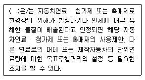
- 국립환경기술원장
- 한국환경공단이사장
- 국립환경과학원장
- 특별시장ㆍ광역시장ㆍ도지사
(정답률: 40%)
82. 대기환경보전법령상 대기배출시설 설치허가를 받은 A사업장에서 먼지 11톤/년, 일산화탄소 11톤/년, 질소산화물 8톤/년의 대기오염물질이 발생된다면, 사업장 분류기준으로 몇 종에 해당하는가?
- 1종 사업장
- 2종 사업장
- 3종 사업장
- 4종 사업장
(정답률: 43%)
83. 다중이용시설 등의 실내공기질 관리법규상 “보육시설”의 오존 실내공기질 권고기준(ppm)은?
- 0.01 이하
- 0.⑤ 이하
- 0.06 이하
- 0.08 이하
(정답률: 43%)
84. 대기환경보전법령상 초과부과금 산정기준에서 배출허용기준 초과율(%) 계산식으로 옳은 것은?
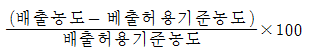
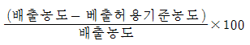
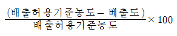
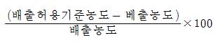
(정답률: 64%)
85. 환경정책기본법령상 대기환경기준으로 옳지 않은 것은?
- 아황산가스(SO2) – 연간평균치 0.02ppm 이하
- 일산화탄소(CO) - 1시간평균치 25ppm이하
- 미세먼지(PM-10) – 연간평균치 50mg/m3이하
- 오존(O3) - 1시간 평균치 0.1ppm이하
(정답률: 49%)
86. 대기환경보전법상 집단에너지사업법에 의한 집단에너지시설(대기오염배출시설)이 가동개시 신고를 하지 않아 그 처분이 조업정지에 해당하여 공익에 현저한 지장을 초래할 수여가 있다고 인정되는 경우로서 조업정지처분에 갈음하여 얼마의 과징금을 부과할 수 있는가?
- 1억원 이하
- 2억원 이하
- 3억원 이하
- 5억원 이하
(정답률: 55%)
87. 대기환경보전법규상 대기오염물질의 공동처리를 위해 공동 방지시설을 설치하고자 하는 공동방지시설 운영기구의 대표자가 허가를 받기 위해 시ㆍ도지사에게 제출하여야 하는 서류에 해당하지 않는 것은?
- 기술능력현황을 기재한 서류
- 사업장에서 공동 방지시설에 이르는 연결관의 설치도면 및 명세서
- 공동 방지시설 운영에 관한 규약
- 공동 방지시설의 위치도(축척 2만 5천분의 1의 지형도)
(정답률: 32%)
88. 다음은 대기환경보전법규상 대기환경규제지역 지정에 관한 사항이다. ( )안에 알맞은 것은?
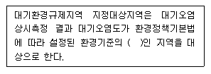
- 30퍼센트 이상
- 50퍼센트 이상
- 70퍼센트 이상
- 80퍼센트 이상
(정답률: 69%)
89. 대기환경보전법령상 “대기오염물질발생량의 합계가 연간 2.2톤인 사업장”은몇 종 사업장에 해당하는가?
- 2종 사업장
- 3종 사업장
- 4종 사업장
- 5종 사업장
(정답률: 66%)
90. 대기환경보전법규상 기관출력이 130kW 이상인 선박의 질소산화물 배출허용기준(g/kWh)은? (단, 정격기관속도 n(크랭크샤프트의 분당 회전수)이 130rpm미만인 경우이다.)
- 9.8 이하
- 45.0 x n(-0.2)
- 13 x (n-2.5)
- 17 이하
(정답률: 58%)
91. 대기환경보전법규상 자동차 연료의 경유 제조기준 중 황함량(ppm) 기준은? (단, 적용기간 2009년 1월1일부터)
- 10 이하
- 30 이하
- 50 이하
- 170 이하
(정답률: 30%)
92. 다음은 다중이용시설 등의 실내공기질 관리법규상 실내공기질의 측정사항이다. ( )안에 알맞은 것은?
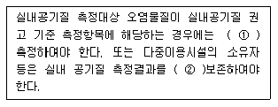
- ① 연1회, ② 1년간
- ① 연1회, ② 3년간
- ① 2년에 연1회, ② 1년간
- ① 2년에 연1회, ② 3년간
(정답률: 37%)
93. 대기환경보전법규상 배출가스 관련부품을 장치별로 구분할 때 다음 중 연료증발가스방지장치(Evaporative Emission Control System)에 해당하는 것은?
- 정화조절밸브(Purge Control Valve)
- 재생용가열기(Regenerative Heater)
- PVC밸브
- 연료분사펌프(Fuel Injection Pump)
(정답률: 42%)
94. 대기환경보전법령상 배출시설 설치허가 신청서 또는 배출 시설 설치신고서에 첨부하여야 할 서류로 가장 거리가 먼 것은?
- 원료(연료를 포함한다)의 사용량
- 오염물질 등의 배출량을 예측한 명세서
- 배출시설의 연간 유지관리 계획서
- 방지시설의 일반도
(정답률: 34%)
95. 대기환경보전법상 벌칙기준 중 7년 이하의 징역이나 1억원 이하의 벌금에 처하는 것은?
- 조업정지 기간에 조업을 하여 받은 배출시설의 폐쇄나 조업정지에 관한 명령을 위반한 자
- 측정기기의 부착 등의 조치를 하지 아니한 자
- 지정사업자가 아닌 자가 운행차 정밀검사 지정사업자로 지정을 받은 것처럼 하여 정밀검사업무를 한자
- 연료사용 제한조치 등의 명령을 위반한 자
(정답률: 59%)
96. 대기환경보전법상 시ㆍ도지사는 비산먼지를 발생 억제를 위한 시설의 설치 또는 필요한 조치를 하지 아니하거나 그 시설의 설치 또는 필요한 조치를 하지 아니하거나 그 시설이나 조치가 적합하지 아니하다고 인정하는 경우에는 그 사업을 하는 자에게 필요한 시설의 설치나 조치의 이행 또는 개선을 명할 수 있는데, 이러한 명령을 이행하지 아니하는 자에게 시ㆍ도지사가명할 수 있는 조치로 가장 거리가 먼 것은?
- 시설 등의 이전명령
- 시설 등의 사용중지
- 그 사업의 중지
- 시설 등의 사용제한
(정답률: 66%)
97. 대기환경보전법상 환경기술인을 임명하지 아니하거나 임명(바꾸어 임명한 것을 포함한다.)에 대한 신고를 하지 아니한 자에 대한 벌칙 기준은?
- 200만원 이하의 벌금에 처한다.
- 300만원 이하의 벌금에 처한다.
- 1년 이하의 징역 또는 500만우너 이하의 벌금에 처한다.
- 2년 이하의 징역 또는 1천만원 이하의 벌금에 처한다.
(정답률: 47%)
98. 대기환경보전법령상 초과부과금의 부과대상 오염물질의 종류에 해당하지 않는 것은?
- 시안화수소
- 먼지
- 질소산화물
- 암모니아
(정답률: 60%)
99. 대기환경보전법규상 대기오염 방지시설에 해당하지 않는 것은? (단, 기타사항 등은 고려하지 않는다.)
- 촉매반응을 이용하는 시설
- 흡착에 의한 시설
- 응집에 의한 시설
- 미생물을 이용한 처리시설
(정답률: 34%)
100. 대기환경보전법규상 대기오염 측정기기의 운영ㆍ관리 기준을 지키지 않아 조치명령을 받은 사업자가 제출하여야 하는 개선계획서에 포함되거나 첨부되어야 할 사항으로 가장 거리가 먼 것은?
- 개선기간
- 개선내용 및 개선방법
- 굴뚝 자동측정기기의 운영ㆍ관리 진단계획
- 오염물질의 처리방식
(정답률: 38%)
북반구에서는 항상 움직이는 물체의 운동방향의 왼쪽 90℃방향으로 작용하는 이유는 지구의 자전에 의해 생기는 전향력 때문입니다. 전향력은 지구의 자전에 의해 생기는 힘으로, 지구의 회전축 주위를 도는 물체에 작용하는 힘입니다. 전향력의 크기는 위도, 지구자전 각속도, 풍속의 함수로 나타납니다. 극지방에서는 전향력이 최대가 되고, 적도 지방에서는 최소가 됩니다. 이는 지구의 자전축과 수평한 방향으로 불어오는 바람이 전향력에 의해 오른쪽으로 편향되기 때문입니다.